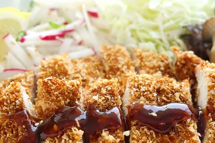

Chicken Katsu Recipe

Description
Chicken katsu is Japanese-style fried chicken. This recipe is posted by user "sakuraiiko", This recipe can also be used to make tonkatsu by using pork cutlets instead of chicken. Serve with white rice and tonkatsu sauce.
Ingredients
- Chicken
- Seasonings
- Flour
- Egg
- Panko bread crumbs
- Oil
Steps
- Season the chicken, then dredge in flour.
- Coat each breast in egg, then press into the Panko.
- Fry the chicken katsu until golden brown.